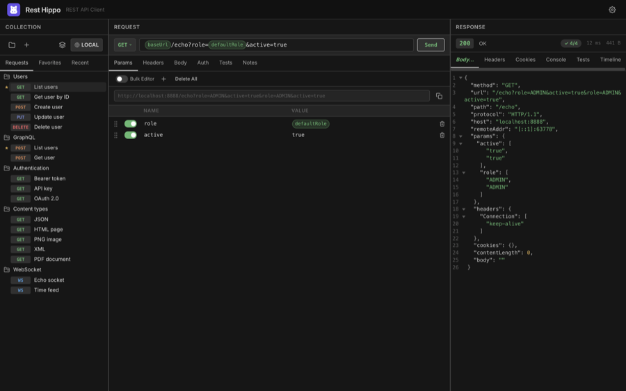
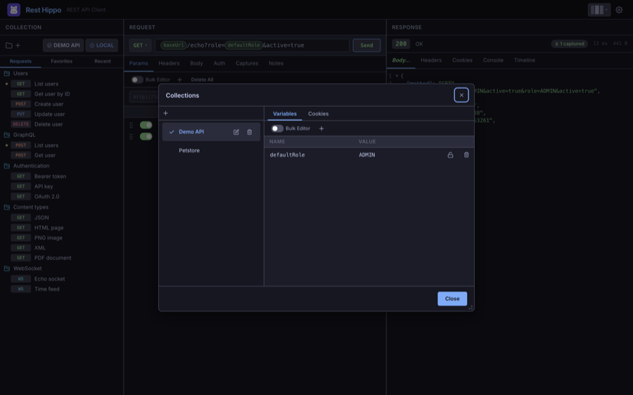
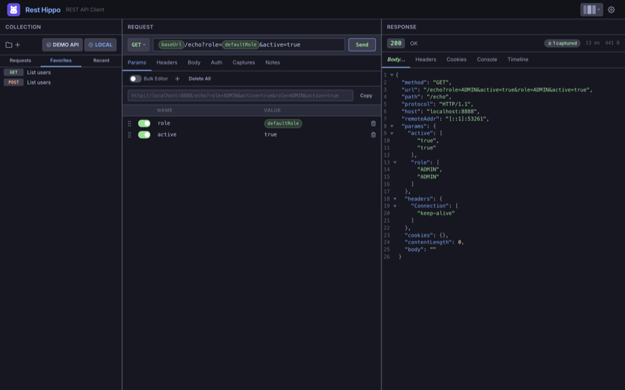
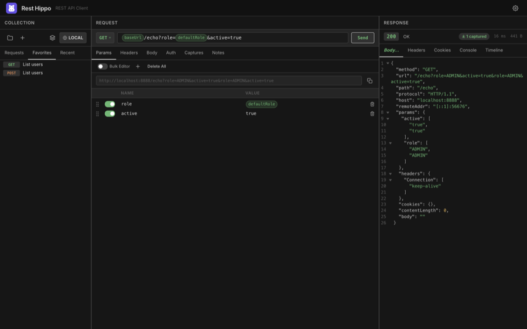

Collections & the Tree
The left panel is where your requests live. Rest Hippo organizes them into collections (top-level groups) containing folders and requests, nested as deeply as you like.

Collections
A collection is a self-contained group of requests with its own variables and an optional cookie jar. The active collection is shown in the collection selector in the panel's toolbar (the row with the + buttons), on the right — a stacked-layers icon plus its name (e.g. Demo API) — sitting next to the environment picker.
Click the collection selector to open the Collections manager, where you create, rename, switch, and delete collections:

- + — create a new, empty collection.
- Click a collection row to make it active; a check marks the active one.
- The pencil and trash icons (or a double-click on the name) rename and delete a collection. Deletes ask for confirmation.
- The Variables and Cookies tabs on the right edit that collection's variables and stored cookies.
Folders and requests
Inside a collection you build a tree of folders and requests:
- New Request — the + button above the tree, or right-click a folder → Add Request.
- New Folder — right-click a collection or folder → Add Folder.
- New WebSocket Request — right-click a folder → Add WebSocket Request, or right-click the + button above the tree and choose Add WebSocket Request (see WebSockets).
- Reorder / re-nest — drag a request or folder to move it; a placeholder shows where it will land.
- Rename — double-click the name (or right-click → Rename). Enter confirms, Esc cancels.
- Filter — click anywhere in the tree and press Cmd+F (Ctrl+F on Windows/Linux) to reveal a filter box above the list; type to filter requests by name. Esc hides it and clears the filter.
Each request shows a colored method badge (GET, POST, PUT, DELETE, …). You can switch these badges to compact icons in Settings → Appearance.
The right-click menu
Right-clicking a request or folder opens a context menu with the most common actions:
| Action | Applies to | What it does |
|---|---|---|
| Add Request / Add WebSocket Request / Add Folder | folders | Create a child item |
| Rename | both | Edit the name inline |
| Favorite / Unfavorite | requests | Toggle the Favorites star |
| Duplicate | both | Copy the item (and its contents) |
| Generate code… | requests | Preview the request as cURL, JavaScript fetch, Python requests, Go, or HTTPie, then copy |
| Copy as cURL | requests | Copy an equivalent curl command straight to the clipboard |
| Export… | collections | Export the collection |
| Variables | collections, folders | Edit variables for that scope |
| Clear Run History | requests | Discard the request's saved timeline |
| Delete | both | Remove the item (asks to confirm) |
Favorites and Recent
Two extra tabs sit above the tree and span all your collections:
Favorites — requests you've starred for quick access. Star a request from its right-click menu, then drag to reorder them.

Recent — the requests you've used most recently, newest first. This list is maintained automatically.

Prefer not to see the Recent tab? Turn off Show recents in Settings → Appearance.
Cookies
Each collection has its own cookie jar. When Send cookies is enabled for a collection, cookies returned by responses are stored and automatically attached to matching later requests in that collection. Manage the jar from the Cookies tab in the Collections manager, and inspect cookies a response set on the Cookies tab of the response viewer.
Next: Building Requests →